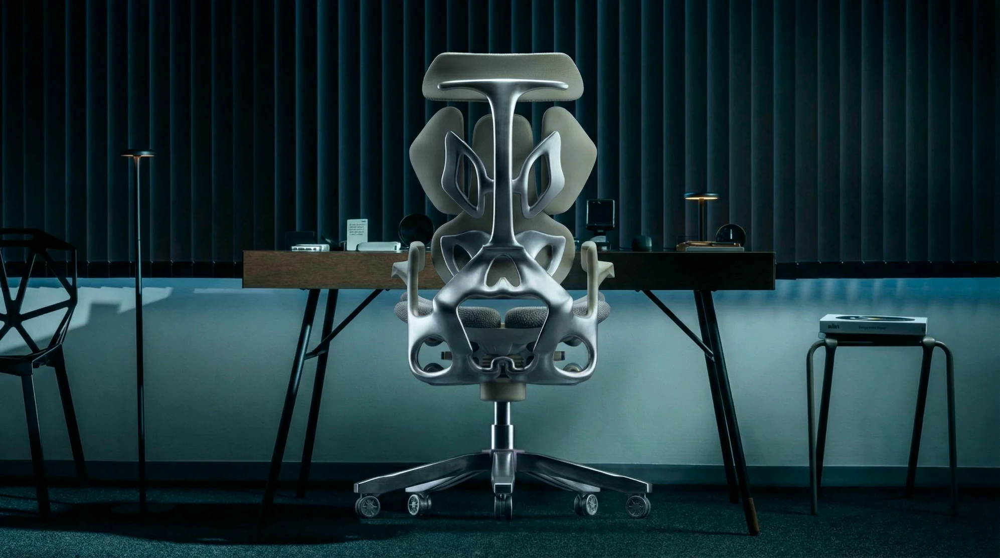
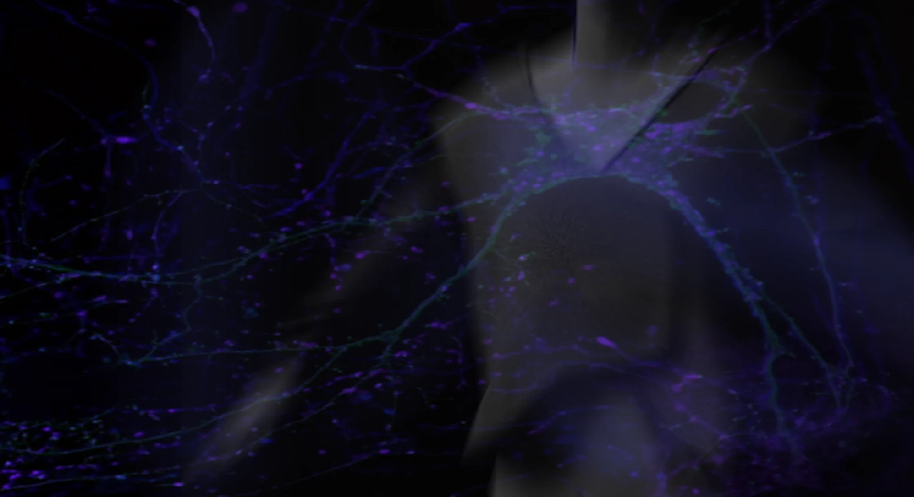
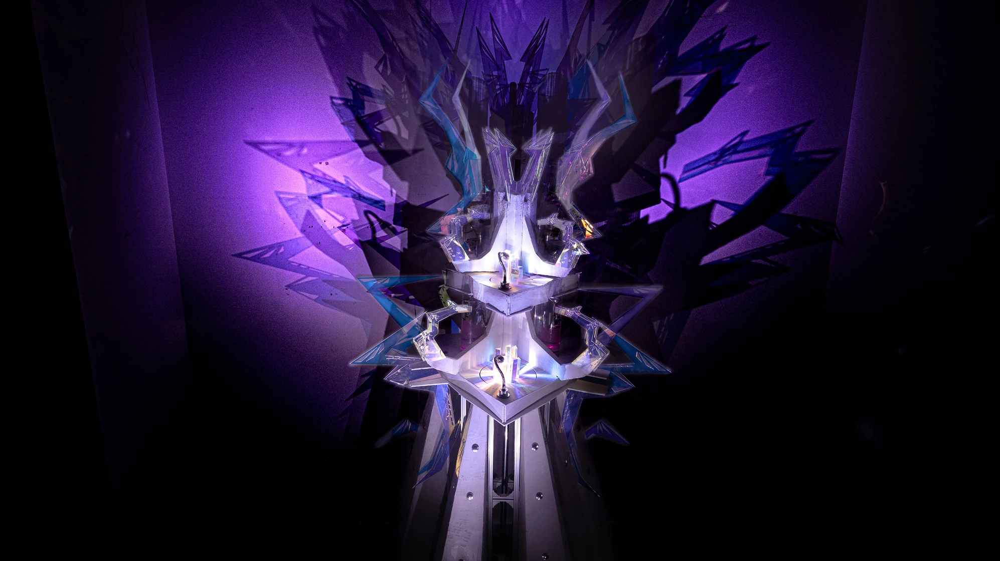
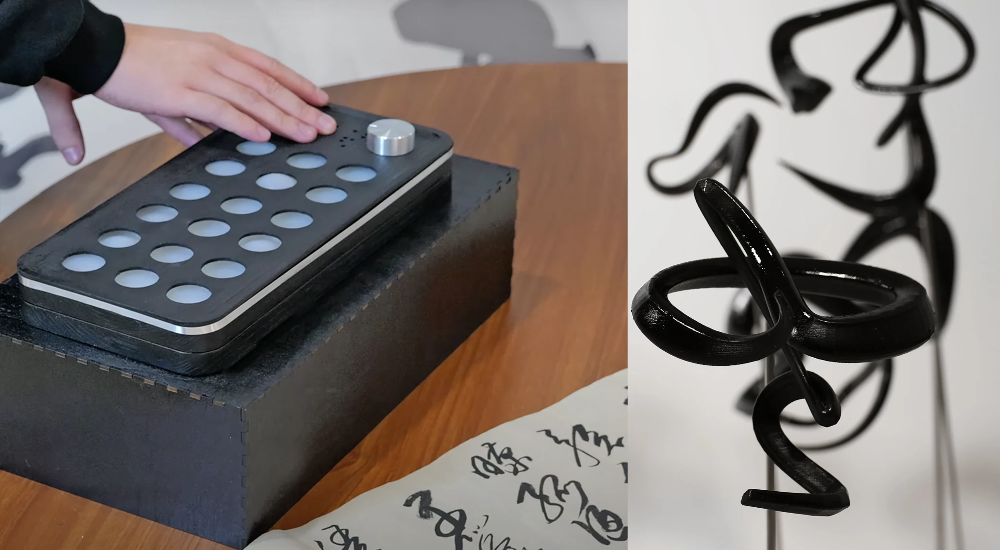
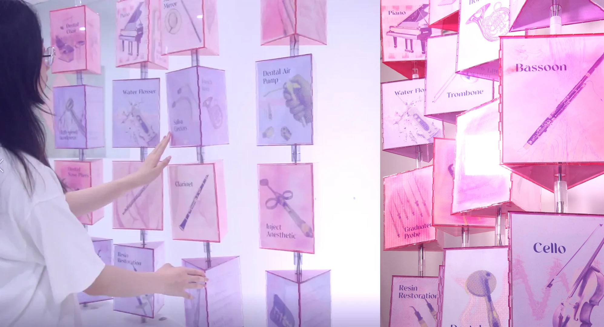

WORKS
Intelligent products, wearable systems, robotics and critical interactive installations. Each project moves from human need to technical validation and tangible experience.
 2026TEAM WORK
2026TEAM WORKAI Agent for Home Growing
ROBIN
Computer vision, generative AI and mobile robotics combine to identify plant health, automate care and create an emotionally engaging growing companion.
OPEN 2026TEAM WORK
2026TEAM WORKAdaptive Smart Textile System for Prosthetic Users
HEXA-S
An embroidered flexible sensing system that monitors residual-limb volume changes and supports dynamic prosthetic socket adaptation.
OPEN- 2026PERSONAL WORK
Foldable Intelligent Water-Rescue Equipment
ORIVA
A compact rescue system using dense folding, rapid deployment and multi-device coordination for complex, high-risk waters.
OPEN 
2025PERSONAL WORKActive Micro-Motion Ergonomic Chair
SOMA
Controlled three-dimensional micro-movements activate muscles around the spine, creating a subtle and continuous intervention for prolonged sitting.
OPEN
2024PERSONAL WORKIntelligent Wearable Monitoring for Alzheimer’s Care
I-SENCE
Movement and vital-sign sensors integrated into easy-to-wear care clothing help caregivers recognise abnormal behaviour and track patient status.
OPEN 2025PERSONAL WORK
2025PERSONAL WORKEnvironment-Aware Interactive Ambient Light
AURA
Sound, light and environmental sensing create lifelike feedback, turning an ambient lamp into an emotional interior interface.
OPEN 2024PERSONAL WORK
2024PERSONAL WORKSpeculative Healthcare for a Space-Debris-Contaminated Future
KALPA
A wearable interactive installation that turns the environmental consequences of burning space debris into a visceral bodily experience.
OPEN
2024PERSONAL WORKCritical Interactive Installation on Digital Labour
OBLATION
Tokens representing labour drive increasingly dazzling yet disordered audiovisual feedback, revealing the hidden human cost behind digital prosperity.
OPEN
2024TEAM WORKCalligraphy Emotion Data Translation Installation
SYNAPSE
Physiological and movement data from writing are translated into sound, touch and Braille forms, expanding visually impaired participation in calligraphy.
OPEN
2023PERSONAL WORKPatient-Centred Dental Medical Device Design
SOLACE
Dental equipment redesigned around clinical workflow, operator ergonomics and patient anxiety to improve the experience for clinicians and patients.
OPEN